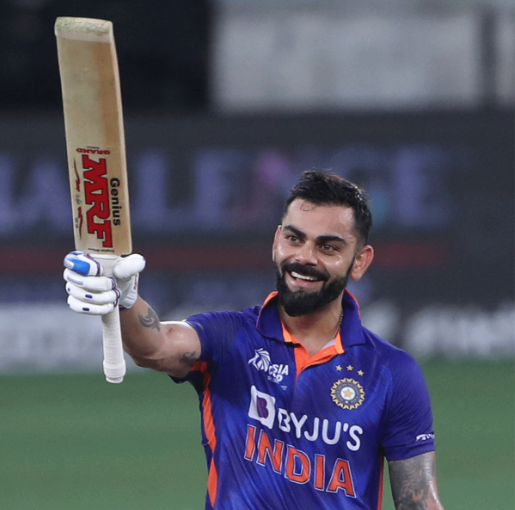
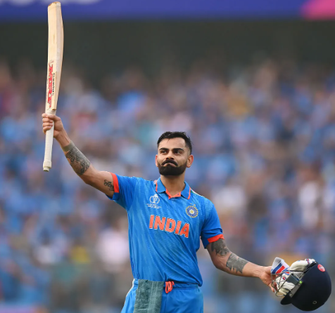
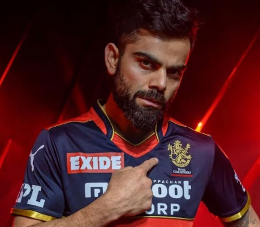
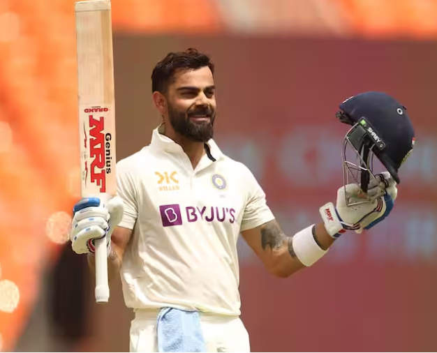
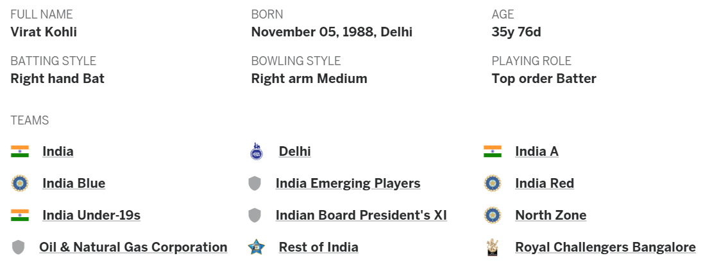

Virat Kohli




About the legend
- Virat Kohli, the talismanic Indian cricketer, has emerged as one of the greatest batsmen of his generation. Born on November 5, 1988, in Delhi, India, Kohli's journey from a young and fiery talent to the captain of the Indian cricket team has been nothing short of remarkable. With numerous records to his name and a relentless pursuit of excellence, Kohli has become a symbol of inspiration for aspiring cricketers worldwide.
-
Early Life and Cricketing Journey:
Virat Kohli's tryst with cricket began at a young age, as he started playing the sport seriously in his teenage years. His dedication and talent quickly caught the eye of coaches and selectors, leading to his inclusion in the Indian Under-19 team. Kohli played a pivotal role in India's triumph in the 2008 ICC Under-19 Cricket World Cup, foreshadowing his future as a cricketing maestro. -
International Debut and Rise to Prominence:
Virat Kohli made his international debut for India in August 2008 in an ODI against Sri Lanka. His early years in international cricket were marked by flashes of brilliance, showcasing his ability to chase targets and play under pressure. Kohli's breakthrough moment came during the 2011 ICC Cricket World Cup, where he played crucial innings, helping India lift the trophy after 28 years. -
Consistent Performances and Records:
One of Kohli's defining characteristics is his remarkable consistency across formats. In Test cricket, he has established himself as a run-machine, amassing centuries against top bowling attacks around the world. His aggressive yet controlled batting style has earned him praise, and his adaptability to different formats sets him apart.
Virat Kohli's records are a testament to his batting prowess. He became the fastest player to reach 8,000, 9,000, 10,000, and 11,000 runs in One Day Internationals (ODIs). Kohli also holds the record for the highest career batting average in T20Is, underlining his dominance in the shortest format. -
Conclusion:
Virat Kohli's journey in cricket is a saga of determination, talent, and relentless pursuit of excellence. His batting records, leadership qualities, and off-field contributions have made him a cricketing icon. As he continues to inspire millions of cricket enthusiasts around the world, Kohli's legacy as one of the modern masters of the game is firmly established.